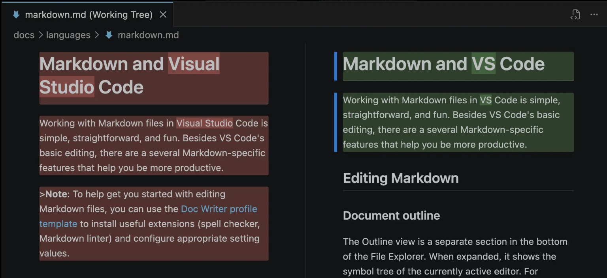

.png)

Visual Studio Code 1.120
Welcome to the 1.120 release of Visual Studio Code. This release brings the Agents window to Stable, improves BYOK model visibility and control, and adds Markdown quality-of-life improvements and agent safety features. Here are the highlights for this release:
While VS Code is already used by millions of developers for agentic coding, its editor layout is primarily optimized for single-task, single-workspace workflows. To enable our users (and ourselves!) to work with multiple agents across multiple projects, we created a new type of window: Agents.
The new Agents window is a companion to the editor you already know: purpose-built for agent-driven development, with a dedicated space to explore, iterate on, and review tasks across multiple projects, and seamlessly switch between them. And because VS Code is built for developer choice and flexibility, the Agents window lets you pick your agent harness, run agents on remote machines, and configure the environment the way you want it - color themes, keybindings, and extensions included.
The Agents window has been available as part of VS Code Insiders in our past few releases, and with this release, it's now available as a preview in VS Code Stable.
To kick off Agent Sessions Day, I sat down with Peng Lyu,
Engineering Manager on the VS Code team, to walk through how the VS Code team
actually uses AI for our day-to-day work.

In that session, we probably only covered 5% of what the team does with agents
on any given day. But it's representative of how a product that's used by millions
of developers is built.
View BYOK model token usage
Managing a model's context window is key to getting good results and controlling costs. The model can lose track of important details from the conversation, and token usage can increase costs. This release brings better visibility into token usage for BYOK models, so you can keep an eye on the context window.
Previously, when chatting with a model you brought via your own API key (Anthropic, OpenAI, or other), the control always displayed 0% and a zero-token count because token accounting was only working for built-in models.